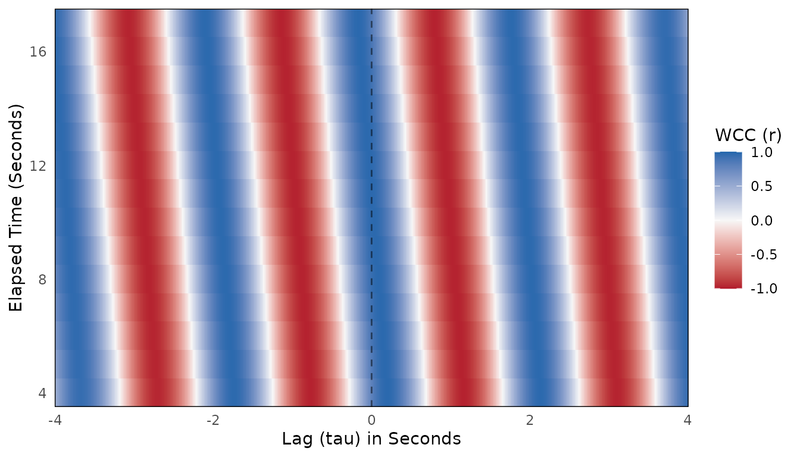
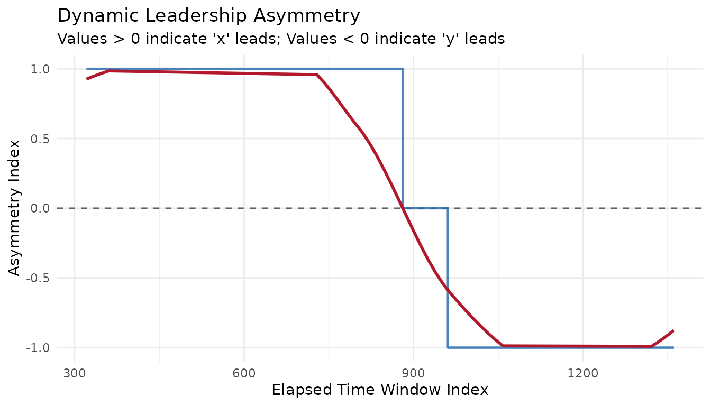
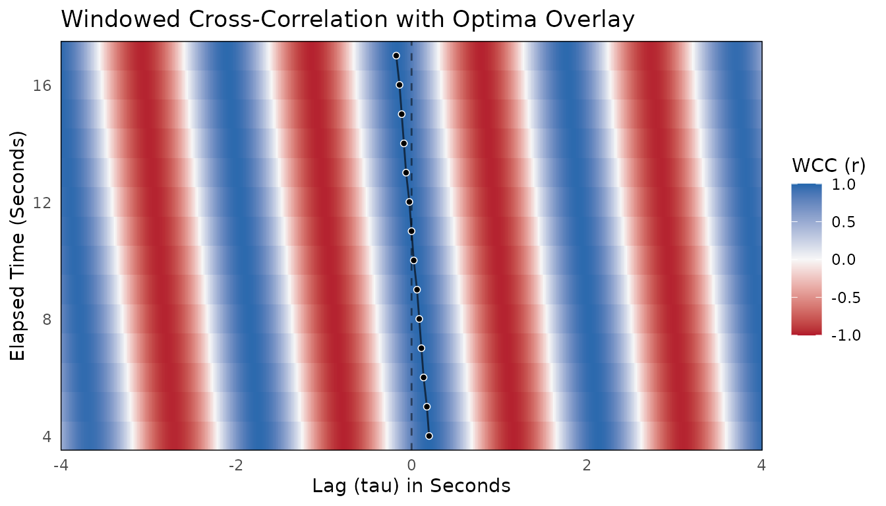

bsync provides a modern, high-efficiency toolkit for analyzing interpersonal and behavioral synchrony in continuous dyadic time series. It implements windowed estimators of nonstationary lead–lag structure — Windowed Cross-Correlation (WCC), Windowed Dynamic Time Warping (WDTW), and Windowed Granger Causality (WGC) — together with a full preprocessing pipeline, surrogate significance testing, optima extraction, and parameter guidance tools.
This vignette walks you through the complete workflow from raw data to a quantified leadership index. It also gives you the decision table you need to choose the right estimator and points you toward the relevant deep-dive articles.
The bsync analysis workflow
A complete behavioral synchrony analysis has five stages:
- Preprocess — smooth, trim, and compute kinematics from raw position data.
- Choose parameters — select window size and lag ceiling that match the signal’s timescales.
- Estimate — run WCC, WDTW, or WGC on the prepared signals.
- Test significance — compare the observed statistic against a surrogate null distribution.
- Quantify leadership — extract optima and compute the Leadership Asymmetry Index.
The following example walks through all five stages using the
built-in sim_dyad dataset, which contains 30 seconds of
simulated 3D motion-tracking data (80 Hz) for two individuals. Person A
leads a rhythmic movement early in the recording, they briefly
synchronize, and Person B takes the lead by the end.
Step 1: Preprocess
Raw positional data almost always needs smoothing before analysis. High-frequency noise amplifies when derivatives are calculated, contaminating the cross-correlations. We apply a Savitzky-Golay filter and then compute the 1D velocity along the Z-axis.
library(dplyr)
#>
#> Attaching package: 'dplyr'
#> The following objects are masked from 'package:stats':
#>
#> filter, lag
#> The following objects are masked from 'package:base':
#>
#> intersect, setdiff, setequal, union
# Smooth raw positions, then compute 1D velocity
df <- sim_dyad |>
mutate(
z_A_sm = smooth_signal(z_A, method = "sgolay", window = 5),
z_B_sm = smooth_signal(z_B, method = "sgolay", window = 5),
vel_A = calc_velocity_1d(time, z_A_sm, fill_edges = TRUE),
vel_B = calc_velocity_1d(time, z_B_sm, fill_edges = TRUE)
)Other preprocessing helpers available in bsync:
trim_edges() (drop polynomial-smoothing artifacts),
aggregate_by_time() / downsample_signal()
(reduce sample rate), diagnose_ts_gaps() /
impute_ts_gaps() (handle missing values), and
evaluate_signal_power() (PSD-based downsampling guidance;
see vignette("determine-downsampling")).
Step 2: Choose parameters
The two key hyperparameters for WCC — window_size
(samples per window) and lag_max (maximum temporal offset
to test) — should be matched to the dominant behavioral timescale.
bsync provides three complementary tools (detailed in
vignette("choosing-parameters")):
-
suggest_wcc_params()— PSD-driven starting values for a single dyad. -
synchrony_multiverse()— sweep the full grid and view the specification curve. -
autotune_wcc()— select parameters that generalize across a multi-dyad dataset.
For this quick-start we use hard-coded values that match the 0.5 Hz
dominant cycle in sim_dyad (window ≈ 4 cycles at 80 Hz =
640 samples; lag ≈ half the window = 320 samples). In practice, always
derive these from your own signal.
Step 3: Estimate
With the data prepared and parameters chosen, run wcc().
The function returns a wcc_res object that carries the full
windowed surface, the aggregate Fisher’s Z, and all settings.
wcc_res <- wcc(
x = df$vel_A,
y = df$vel_B,
window_size = 640,
lag_max = 320,
window_increment = 80,
lag_increment = 1
)
summary(wcc_res)
#>
#> ── Windowed Cross-Correlation Analysis ─────────────────────────────────────────
#> Total Windows: 14
#> Total Lags Tested: 641
#> Window Size: 640
#> Max Lag: 320
#> Mean Abs. Fisher's Z: 0.9729
#>
#> ── Cross-Correlation Value Distribution ──
#>
#> 0% 25% 50% 75% 100%
#> -0.9755 -0.6768 0.0550 0.7400 0.9764Plot the surface to see the shifting correlation landscape:
plot(wcc_res, time_step = 1 / 80) # time_step converts frames → seconds
The plot(), print(),
summary(), tidy(), and glance()
methods work identically for wdtw_res and
wgranger_res objects — the shared
bsync_surface superclass ensures a consistent API across
all three estimators.
Step 4: Test significance
Because behavioral time series are autocorrelated, a high cross-correlation can occur purely by chance. Surrogate testing builds an empirical null distribution by breaking the dyadic alignment while preserving each person’s individual signal characteristics.
set.seed(2026)
# Generate 200 circular-shift surrogates (use >= 1000 for publication)
null_mat <- generate_surrogate_circular(
y = df$vel_B,
n_surrogates = 200L,
lag_max = 320
)
# Compare observed WCC against the null
surr_res <- wcc_surrogate(
x = df$vel_A,
y = df$vel_B,
y_surrogates = null_mat,
window_size = 640,
lag_max = 320,
window_increment = 80,
lag_increment = 1
)
print(surr_res)For large or computationally expensive analyses, set a parallel plan
before running:
future::plan(future::multisession, workers = 4). See
vignette("surrogate-testing") for a thorough treatment of
surrogate methods and when to use phase randomization instead.
Step 5: Extract optima and quantify leadership
The full WCC surface tells us how much synchrony exists at
each moment. To track who is leading, we extract the lag that
maximizes correlation within each window (pick_optima()),
then summarize those lags into a continuous Leadership Asymmetry Index
(leadership_asymmetry()).
wcc_res |>
pick_optima(L_size = 9) |>
leadership_asymmetry(epoch_size = 3, min_valid = 1) |>
plot(smooth = TRUE)
#> `geom_smooth()` using formula = 'y ~ x'
The LAI ranges from −1 (y leads entirely) to +1 (x leads entirely).
In this plot you can see Person A leading early, a transition period in
the middle, and Person B leading by the end — exactly as simulated in
sim_dyad.
Visualize the optima overlaid on the surface with
plot_optima_overlay():
optima_df <- pick_optima(wcc_res, L_size = 9)
plot_optima_overlay(wcc_res, optima_df, time_step = 1 / 80, show_zero_lag = TRUE)
Which estimator should I use?
| WCC | WDTW | WGC | |
|---|---|---|---|
| Measures | Linear shape & amplitude similarity | Shape similarity (time-warped) | Directed predictive coupling |
| Best for | Continuous kinematics, vocal pitch, physiological signals with known lag range | Mimicry where one person is faster/slower | Proving direction of information flow |
| Not for | Variable execution speeds; categorical data | Exact-timing analyses; very noisy data | Unknown lags; non-linear systems; categorical data |
| Output | Correlation surface (higher = more synchrony) | Distance surface (lower = more synchrony) | F-statistic surface, both directions |
| Key parameter |
window_size, lag_max
|
window_size, lag_max
|
window_size, ar_order
|
| Deep dive | vignette("wcc-workflow") |
vignette("wdtw-workflow") |
vignette("wgranger-workflow") |
If you are unsure, start with WCC — it is the most widely used
estimator in behavioral synchrony research and the one for which
suggest_wcc_params() and autotune_wcc()
provide the most direct guidance.
Where to go next
| Article | What you will learn |
|---|---|
vignette("wcc-workflow") |
Full WCC pipeline with optima, LAI, tidy interface, and the two
aggregate statistics (mean_abs_z
vs. peak) |
vignette("wdtw-workflow") |
WDTW step-by-step with surrogate testing and optima extraction |
vignette("wgranger-workflow") |
WGC step-by-step with F-statistic and p-value plots |
vignette("choosing-parameters") |
Data-driven parameter selection: suggest_wcc_params(),
synchrony_multiverse(), autotune_wcc(), and
select_specification()
|
vignette("surrogate-testing") |
When to use circular-shift vs. phase-randomization surrogates; best practices |
vignette("determine-downsampling") |
How to choose a biologically appropriate sample rate from PSD diagnostics |